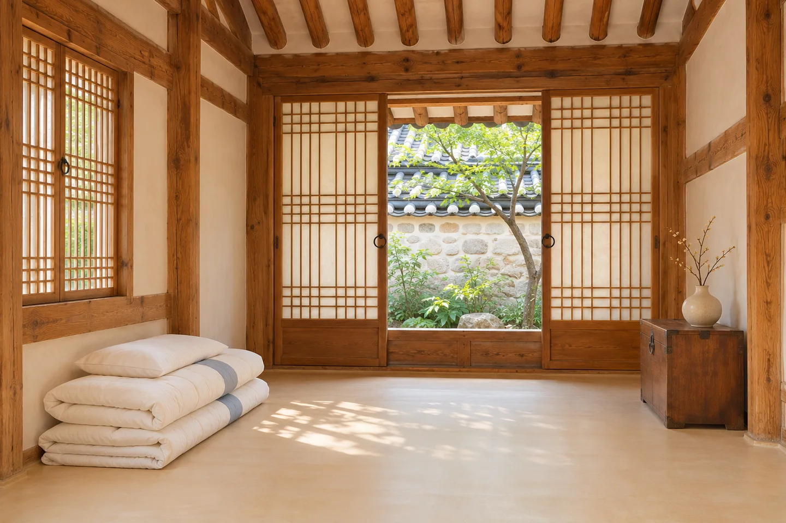
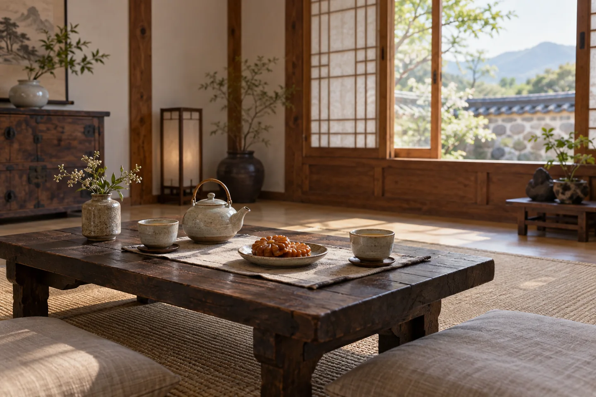

A tiled roof may catch your attention first. For an overnight stay, the quieter details matter too: where you will sleep, how the bathroom is arranged and when you can arrive. This is a planning guide, not a personal stay review or a recommendation of a particular property.
Start with the kind of stay you want.
Hanok means a traditional Korean house. The Korea Tourism Organization describes a range of stays, from traditional houses to contemporary interpretations. Its overview includes Seoul, Jeonju, Gyeongju and Andong as places to explore. Treat these as starting points for your own search.
First decide how the stay fits your route. Would you like to walk to dinner, or spend more of the evening at the accommodation? Check the actual address and the journey from your arrival station. A beautiful listing photo cannot answer those practical questions.
Ask how the room is set up.

Many hanok stays use bedding on the floor, while some offer beds and modern amenities. VISITKOREA advises checking the facilities before reserving. Look at the exact room category you are booking, rather than assuming every room matches the main photograph.
Ask about the sleeping arrangement, private or shared bathroom, heating and cooling, and any steps on the route to the room. If one of these is important to your comfort, get a clear answer from the host before payment. These are suggested booking questions, not claims that a particular property has or lacks those facilities.
Traditional hanok architecture combines ondol, an underfloor heating system, with maru, an elevated wooden floor. That background helps explain the different spaces, but it does not tell you how a modern guest room is equipped or how its controls work.
Make arrival easy.

Save the address, host contact and check-in instructions where you can find them during the journey. Confirm the arrival window and what to do if your train is delayed. Check luggage arrangements if you hope to leave a bag before check-in or after checkout.
Before booking, read the total price, included services and cancellation terms for your dates. Ask which spaces are private and which are shared. On arrival, let the host show you where shoes belong and how to use the room; follow that property's instructions instead of guessing from another stay.
Leave room for a quiet evening.

Some hanok accommodations offer cultural activities, but an overnight reservation does not automatically include a tea session or breakfast. If an activity matters to you, ask whether it is available on your dates and whether it needs a separate booking.
Follow the host's quiet-hour, photography and shared-space guidance. Keep bags clear of doors and passageways, and ask before moving furnishings. VISITKOREA also notes the need for care around wooden buildings and heritage features. Avoid open flames and follow the property's safety instructions.
You do not need to fill the stay with activities. A little time to notice the timber, light and courtyard can be enough. Choose the room for how you want to spend the night, as well as how it looks in a photograph.
Sources & before you book
Official sources checked November 18, 2026. VISITKOREA's accommodation overview carries a September 28, 2026 update notice. Room layouts, amenities, activities, rates and policies vary by property; confirm them directly for your dates. Booking questions and guest courtesies above are general planning suggestions. All four illustrations are AI-generated and do not document a real stay or bookable property.
- Korea Tourism Organization — Hanok Accommodations
- Visit Korean Heritage Campaign — Hanok architecture